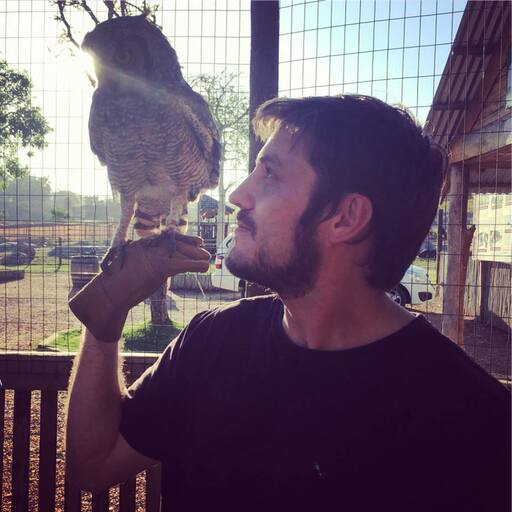

A little bit About Me...
Hello!
I’m 32 years young and live in Cape Town South Africa. I'm doing my MA at Falmouth University in Creative App Development while working full time as Creative Director and Technical Lead at Virtuality Live.
I am very passionate about interactive story telling and solving real world problems using Gaming Technologies.
The past few years I have fallen in love with developing applications on game engines and learning how we interact with out digital environments through analytics. I’m so excited to share some of my interactive ideas and learn from feedback giving and all my students in the coming year.
It excites me to share my thoughts and creative problem solving ideas with everyone and receive feedback to learn and grow my skills as a Creative Application Developer.